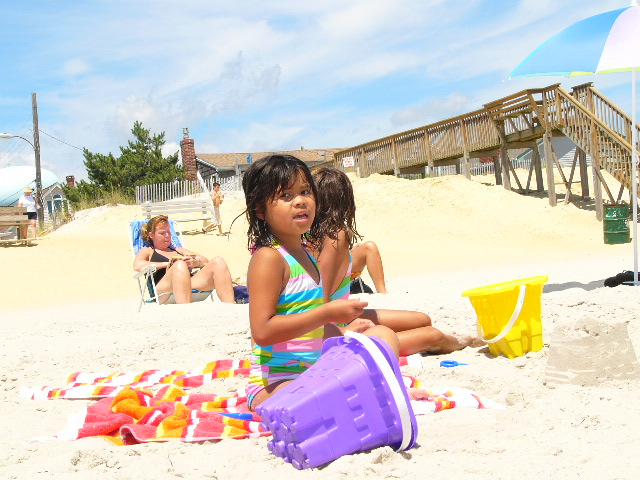
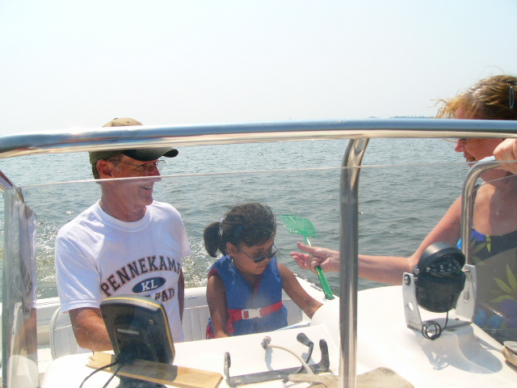

Me, Myself, and I
Most of my pictures are when I was little. I loved the beach as a kid. I still do! As a child though, I had severe hydrophobia. But I loved the feeling of the waves, building sandcastles, and collecting seashells. I almost grabbed a jellyfish once! I thought it was a sanddollar...
I also got very brown in the sun as a child. I had so many experiences! I caught fish, was tricked into trying to hold an eel, and even received lessons on driving my Grandpa Uncle Bobby's boat. He was Grandpa Uncle, because I confused him with my Grandpa Bobby.
Boating was a lot of fun! That was around the time I was starting to wear glasses, and I got the clipped on sunglass lens to attach to my glasses. My Grandpa Uncle Bobby trusted me to follow instructions as long as I could see, and taught me how to work his boat. I had to clean it afterwards though...so he still got a better deal! However, thanks to him, I learned a lot about fishing, crabbing, cooking seafood, and how to tell the difference between male and female crabs (I forgot though, hehe).